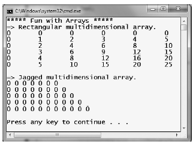

As I would guess you are already aware, an array is a set of data items, accessed using a numerical index. More specifically, an array is a set of contiguous data points of the same type (an array of ints, an array of strings, an array of SportsCars, and so on). Declaring an array with C# is quite straightforward. To illustrate, create a new Console Application project (named FunWithArrays) that contains a helper method named SimpleArrays(), invoked from within Main():
Look closely at the previous code comments. When declaring a C# array using this syntax, the number used in the array declaration represents the total number of items, not the upper bound. Also note that the lower bound of an array always begins at 0. Thus, when you write int[] myInts = new int[3], you end up with an array holding three elements, indexed at positions 0, 1, 2.
Once you have defined an array variable, you are then able to fill the elements index by index as shown in the updated SimpleArrays() method:
class Program { static void Main(string[] args) { Console.WriteLine("***** Fun with Arrays *****"); SimpleArrays(); Console.ReadLine(); } static void SimpleArrays() { Console.WriteLine("=> Simple Array Creation."); // Assign an array of ints containing 3 elements {0, 1, 2} int[] myInts = new int[3]; // Initialize a 100 item string array, indexed {0 - 99} string[] booksOnDotNet = new string[100]; Console.WriteLine(); } }
Note Do be aware that if you declare an array, but do not explicitly fill each index, each item will be set to the default value of the data type (e.g., an array of bools will be set to false or an array of ints will be set to 0).
In addition to filling an array element by element, you are also able to fill the items of an array using C# array initialization syntax. To do so, specify each array item within the scope of curly brackets ({}). This syntax can be helpful when you are creating an array of a known size and wish to quickly specify the initial values. For example, consider the following alternative array declarations:
static void SimpleArrays() { Console.WriteLine("=> Simple Array Creation."); // Create and fill an array of 3 Integers int[] myInts = new int[3]; myInts[0] = 100; myInts[1] = 200; myInts[2] = 300; // Now print each value. foreach(int i in myInts) Console.WriteLine(i); Console.WriteLine(); }
Notice that when you make use of this "curly bracket" syntax, you do not need to specify the size of the array (seen when constructing the stringArray variable), given that this will be inferred by the number of items within the scope of the curly brackets. Also notice that use of the new keyword is optional (shown when constructing the boolArray type).
In the case of the intArray declaration, again recall the numeric value specified represents the number of elements in the array, not the value of the upper bound. If there is a mismatch between the declared size and the number of initializers, you are issued a compile-time error. The following is an example:
// OOPS! Mismatch of size and elements! int[] intArray = new int[2] { 20, 22, 23, 0 };
In the previous chapter, you learned about the topic of implicitly typed local variables. Recall that the var keyword allows you to define a variable, whose underlying type is determined by the compiler. In a similar vein, the var keyword can be used to define implicitly typed local arrays. Using this technique, you can allocate a new array variable without specifying the type contained within the array itself:
static void DeclareImplicitArrays() { Console.WriteLine("=> Implicit Array Initialization."); // a is really int[]. var a = new[] { 1, 10, 100, 1000 }; Console.WriteLine("a is a: {0}", a.ToString()); // b is really double[]. var b = new[] { 1, 1.5, 2, 2.5 }; Console.WriteLine("b is a: {0}", b.ToString()); // c is really string[]. var c = new[] { "hello", null, "world" }; Console.WriteLine("c is a: {0}", c.ToString()); Console.WriteLine(); }
Of course, just as when you allocate an array using explicit C# syntax, the items in the array's initialization list must be of the same underlying type (e.g., all ints, all strings, or all SportsCars). Unlike what you might be expecting, an implicitly typed local array does not default to System.Object; thus the following generates a compile-time error:
// Error! Mixed types! var d = new[] { 1, "one", 2, "two", false };
In most cases, when you define an array, you do so by specifying the explicitly type of item that can be within the array variable. While this seems quite straightforward, there is one notable twist. As you will come to understand in Chapter 6, System.Object is the ultimate base class to each and every type (including fundamental data types) in the .NET type system. Given this fact, if you were to define an array of objects, the subitems could be anything at all. Consider the following ArrayOfObjects() method (which again can be invoked from Main() for testing):
static void ArrayOfObjects() { Console.WriteLine("=> Array of Objects."); // An array of objects can be anything at all. object[] myObjects = new object[4]; myObjects[0] = 10; myObjects[1] = false; myObjects[2] = new DateTime(1969, 3, 24); myObjects[3] = "Form & Void"; foreach (object obj in myObjects) { // Print the type and value for each item in array. Console.WriteLine("Type: {0}, Value: {1}", obj.GetType(), obj); } Console.WriteLine(); }
Here, as you are iterating over the contents of myObjects, you print out the underlying type of each item using the GetType() method of System.Object as well as the value of the current item. Without going into too much detail regarding System.Object.GetType() at this point in the text, simply understand that this method can be used to obtain the fully qualified name of the item (Chapter 15 examines the topic of type information and reflection services in detail). The following output shows the result of calling ArrayOfObjects().
=> Array of Objects. Type: System.Int32, Value: 10 Type: System.Boolean, Value: False Type: System.DateTime, Value: 3/24/1969 12:00:00 AM Type: System.String, Value: Form & Void
In addition to the single-dimension arrays you have seen thus far, C# also supports two varieties of multidimensional arrays. The first of these is termed a rectangular array, which is simply an array of multiple dimensions, where each row is of the same length. To declare and fill a multidimensional rectangular array, proceed as follows:
static void RectMultidimensionalArray() { Console.WriteLine("=> Rectangular multidimensional array."); // A rectangular MD array. int[,] myMatrix; myMatrix = new int[6,6]; // Populate (6 * 6) array. for(int i = 0; i < 6; i++) for(int j = 0; j < 6; j++) myMatrix[i, j] = i * j; // Print (6 * 6) array. for(int i = 0; i < 6; i++) { for(int j = 0; j < 6; j++) Console.Write(myMatrix[i, j] + "\t"); Console.WriteLine(); } Console.WriteLine(); }
The second type of multidimensional array is termed a jagged array. As the name implies, jagged arrays contain some number of inner arrays, each of which may have a unique upper limit, for example:
static void JaggedMultidimensionalArray() { Console.WriteLine("=> Jagged multidimensional array."); // A jagged MD array (i.e., an array of arrays). // Here we have an array of 5 different arrays. int[][] myJagArray = new int[5][]; // Create the jagged array. for (int i = 0; i < myJagArray.Length; i++) myJagArray[i] = new int[i + 7]; // Print each row (remember, each element is defaulted to zero!) for(int i = 0; i < 5; i++) { for(int j = 0; j < myJagArray[i].Length; j++) Console.Write(myJagArray[i][j] + " "); Console.WriteLine(); } Console.WriteLine(); }
Figure 4-2 shows the output of calling each of the RectMultidimensionalArray() and JaggedMultidimensionalArray() methods within Main().
Once you have created an array, you are free to pass it as an argument or receive it as a member return value. For example, the following PrintArray() method takes an incoming array of ints and prints each member to the console, while the GetStringArray() method populates an array of strings and returns it to the caller:
static void PrintArray(int[] myInts) { for(int i = 0; i < myInts.Length; i++) Console.WriteLine("Item {0} is {1}", i, myInts[i]); } static string[] GetStringArray() { string[] theStrings = {"Hello", "from", "GetStringArray"}; return theStrings; }
These methods may be invoked as you would expect:
static void PassAndReceiveArrays() { Console.WriteLine("=> Arrays as params and return values."); // Pass array as parameter. int[] ages = {20, 22, 23, 0} ; PrintArray(ages); // Get array as return value. string[] strs = GetStringArray(); foreach(string s in strs) Console.WriteLine(s); Console.WriteLine(); }
At this point, hopefully you feel comfortable with the process of defining, filling, and examining the contents of a C# array variable. To complete the picture, let's now examine the role of the System.Array cSystem.Array class.
Every array you create gathers much of its functionality from the System.Array class. Using these common members, you are able to operate on an array using a consistent object model. Table 4-2 gives a rundown of some of the more interesting members (be sure to check the .NET Framework 4.0 SDK documentation for full details).
Table 4-2. Select Members of System.Array
| Member of Array Class | Meaning in Life |
|---|---|
| Clear() | This static method sets a range of elements in the array to empty values (0 for numbers, null for object references, false for booleans). |
| CopyTo() | This method is used to copy elements from the source array into the destination array. |
| Length | This property returns the number of items within the array. |
| Rank | This property returns the number of dimensions of the current array. |
| Reverse() | This static method reverses the contents of an one-dimensional array. |
| Sort() | This static method sorts a one-dimensional array of intrinsic types. If the elements in the array implement the IComparer interface, you can also sort your custom types (see Chapter 9). |
Let's see some of these members in action. The following helper method makes use of the static Reverse() and Clear() methods to pump out information about an array of string types to the console:
static void SystemArrayFunctionality() { Console.WriteLine("=> Working with System.Array."); // Initialize items at startup. string[] gothicBands = {"Tones on Tail", "Bauhaus", "Sisters of Mercy"}; // Print out names in declared order. Console.WriteLine("-> Here is the array:"); for (int i = 0; i < gothicBands.Length; i++) { // Print a name Console.Write(gothicBands[i] + ", "); } Console.WriteLine("\n"); // Reverse them... Array.Reverse(gothicBands); Console.WriteLine("-> The reversed array"); // ... and print them. for (int i = 0; i < gothicBands.Length; i++) { // Print a name Console.Write(gothicBands[i] + ", "); } Console.WriteLine("\n"); // Clear out all but the final member. Console.WriteLine("-> Cleared out all but one..."); Array.Clear(gothicBands, 1, 2); for (int i = 0; i < gothicBands.Length; i++) { // Print a name Console.Write(gothicBands[i] + ", "); } Console.WriteLine(); }
If you invoke this method from within Main(), you will get the output shown here.
=> Working with System.Array. -> Here is the array: Tones on Tail, Bauhaus, Sisters of Mercy, -> The reversed array Sisters of Mercy, Bauhaus, Tones on Tail, -> Cleared out all but one... Sisters of Mercy, , ,
Notice that many members of System.Array are defined as static members and are therefore called at the class level (for example, the Array.Sort() or Array.Reverse() methods). Methods such as these are passed in the array you wish to process. Other methods of System.Array (such as the Length property) are bound at the object level, thus you are able to invoke the member directly on the array.